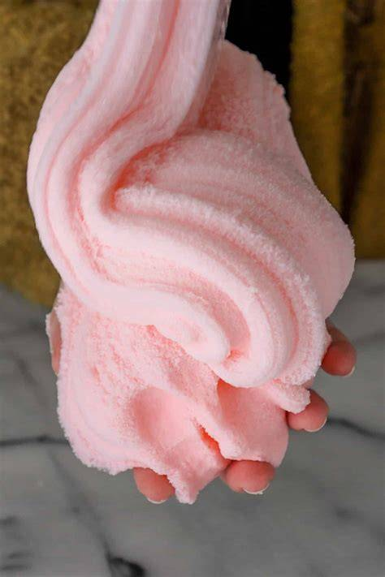
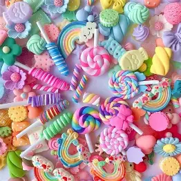
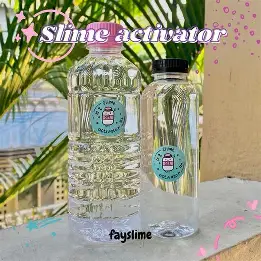

Welcome
In this website It will show you the diferent types of slimes and techniques to help you with them. It will also help you with diferent Textures that you are going for. This website is also here to give you infermation to insier you when you make you own slime. Or if you even just whant to learn a little more about a satsifing toy that makes realy nice ASMR noies. Now lets dive in to a world of slime.
Textures
There are many diferent Textures that you can use to make diferent types of slimes. one way you can add Textures to your slime is by adding shaving cream; by adding shaving cream to your slime base you make fluffy slime. Fluffy slime is soft and smoth and by far my faveret. Next slime type is water slime. Water slime is what it is called. The main ingredeents are glue and water. Because you add so much watter it verry jiggaly. The last one that will be menchend is cloud slime. Cloud slime is made with insent snow wich makes it wet some times. But the snow also makes it act like it's snowing when its streached.

Toppings
topping can make slimes have their own idenates...
- One topping you can add is glitter. Glitter can make it sparkaley and can add diferent shaps to your slime. If you have a clear slime it can also act like coloring depending how much you use but that is for any topping you use.
- Gold leaf is a verry thin peace of gold. it is supper satifing to add to your slime. it looks like gold flakes in the slime. Some times glitter can hert when you sqish the slime but you can barley feel the gold leaf.
- Charms and sprincals are simaler things. Charms are typicaly bigger and plastic. sprincals are normaley tiny and are made of clay.
- Pompoms are are another topping that you can add in slime. It looks realy cool if you add them to a clear base of slime. Then you can see the color peeking though the slime.
- Beads are a grate topping. Beads are grate because it can make the slime crunchy when sqished.

Techniques
There are many diferent techniques that people use. It also depends on the person. Some people do it diferentley depending on what they like, so I will telll you some of the basics. Something that is very usefull is adding the activader slowley. By adding it slowley you have a higher chance of not over activating it. Tip: if you can rip the slime and the inside feels like rubber then it means you over activated it. You can fix this by adding a litte bit of gilseren.
